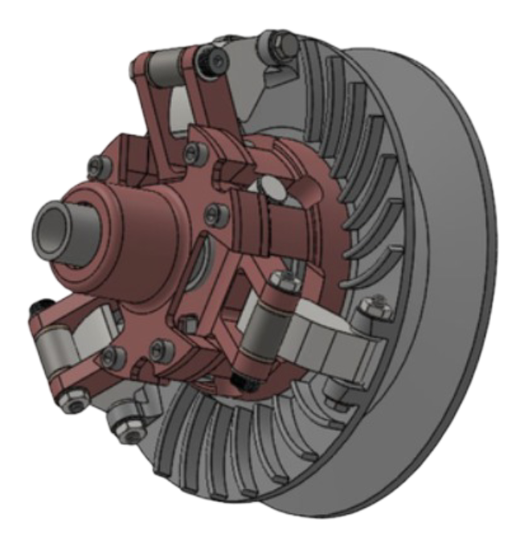

This project involved designing and manufacturing a Continuously Variable Transmission (CVT) system for a 2024 vehicle. The CVT uses a pulley-and-belt mechanism to provide seamless gear ratio transitions, optimizing engine performance through precise RPM engagement control. All components were designed using CAD software and manufactured using precision machining techniques including MasterCam-programmed lathe operations.
